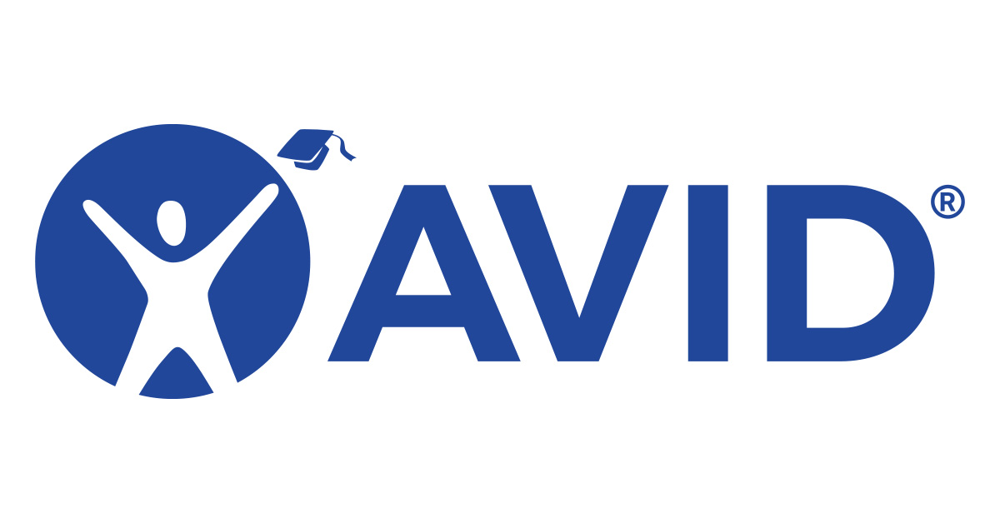
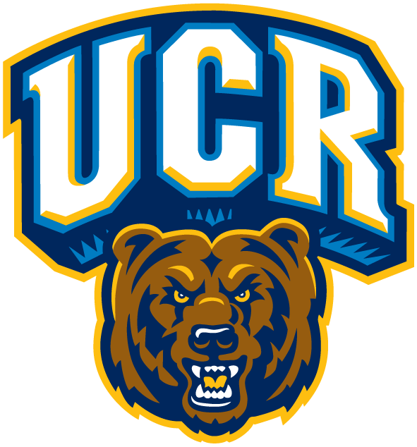
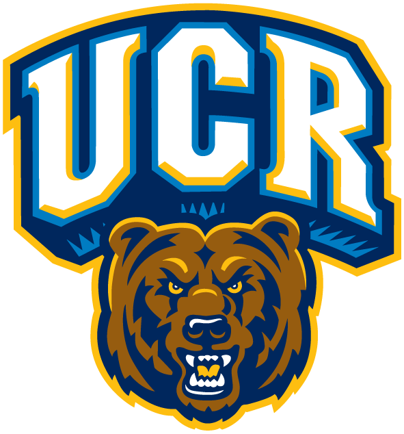

Juliana Cortez
About me
Hi, I'm Juliana!
I am currently a first-year Pre-Business major college student at the University of California Riverside. A little bit about why I chose to major in business was because I believe it will provide me with endless possibilities to discover what I truly want to pursue in my professional career regardless of the hard work I know I will have to put in. Whether that be opening my own small business or pursuing a career in information systems as I aspire to pursue a concentration in information systems in the near future. Regardless of what I pursue, I am confident that my possibilities are endless in the field of business but beyond that, I am open to discovering other concentrations to see what I truly wish to pursue. Hence my desire to put myself out here to see if I can attract any companies possibly looking to recruit any interns as I've expressed I am open to any opportunities for I believe that any internship will teach me invaluable skills. Since I will be able to practice my time management skills, work with others and learn from their different backgrounds, most importantly I wish to expand my knowledge on different fields of business and I will ensure my determination to learn any new skills or experiences.
In addition, I am open to the idea of studying abroad for this concept has always fascinated me hence I am more than willing to take any opportunity to learn abroad culturally and academically. For I believe studying abroad will also allow me to gain highly valuable skills such as intercultural communication, the ability to learn foreign languages, adaptability skills, and problem-solving techniques to work with my peers. I believe studying abroad is an irreplaceable experience for I will be able to gain intercultural skills that are important in business and above that in life, since I will be able to experience a new culture this will allow me to be culturally aware of other places and this can increase my success in my career.
Overall I believe I am more than capable of taking on any internship or any form of international education for not only will it be beneficial to me but to my education as well. As I will be able to learn new irreplaceable skills and experiences. Hence I am certain that my persistent personality to put myself out there will push me to do my part in doing my research to ensure I can undergo one of these experiences in addition I am sure my open mindedness will allow me to grow as an individual and as a business person. Below I have included some of my experiences and educational history that I believe demonstrate my capabilities of participating in any internships and studying abroad programs. Thank you for your time and consideration in taking the time to look over my website. I hope I can exceed your expectations and I look forward to hearing from you soon.
Experience
TRIO Scholars
• Was in Upward bound my four years of Highschool a program apart of TRIO
• Currently enroled in UCR TRIO academic program
• Participaed in TRIO Scholars Financial Literacy Workshop
Workstudy Intership Data Reasearch 2021
• Summer internship apart of Upwards bound
• Assisted supervisor by simplifying facts and statistics to make them understandable
AVID student
• Activity/Organization apart of during High School
• Advancement Via Individual Determination
• Elective for 4 years
• High school elective ment to help prepare me for college admissions
Education
UC Riverside
Portfolio

.png)

.png)
